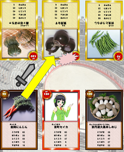
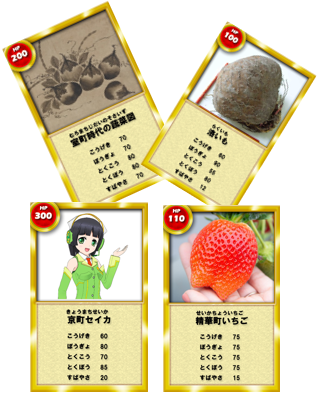
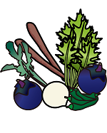
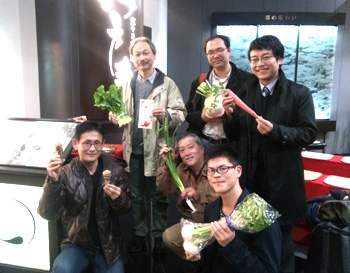

発想のきっかけ
私たち Kyoto Lovers は、京都の地産地消や食育をもっと身近にするために、こどもたちが学べる地域教育素材を開発し、学習機会を創出することが重要と考えました。
そこで私たちは、学習指導要領改訂によりＩＣＴ教育が本格導入されることを踏まえ、京野菜に親しみをもってもらうための「京育」ツールを開発することといたしました。
※京都市教育委員会では、「京都ならではの学校教育」として、市立小学校で、和食文化や農業団体等と連携した食育授業を実施しています。（出典：京都市教育委員会ＨＰ）
「KyoYasai 京育カードバトル」でこう変わる！

学習教材として利用することで、京都市の伝統文化、地産地消、食育についての理解が深まります。
ゲームの「わざ」を通して、京野菜に対する興味を喚起し、楽しく京野菜について学ぶきっかけを作ります。
デジタル地域資料として図書館や資料館等公共施設での活用、イベント等での活用を通じ、こどもからお年寄りまで手軽に、京野菜を学べ、理解が深まります。
将来的には商用利用の可能性もあり、京野菜グッズの販売等、様々な活用法が期待できます。
自治体オープンデータの活用・他団体との協力
京野菜カード用のデータセット作成にあたり、京都市がオープンデータとして公開している 京野菜関連データセット (CC-BY-4.0)を利用させていただきました。
京野菜カードの制作にあたり、公益社団法人京のふるさと産品協会様、京都市産業観光局農林振興室農林企画課様、精華町役場様から写真や画像の利用許可のご協力をいただきました。この場をお借りしてお礼申し上げます。
ＧＬＡＭデータの活用

Japan Search（ジャパンサーチ） より
・蔬菜図（東京国立博物館所蔵、狩野秀頼筆、室町時代）
・蔬菜図（京都国立博物館所蔵、容祖椿（仲生）筆）
国立国会図書館デジタルコレクション より
・蔬菜と果樹（柳内義之進 著、大倉書店、1906）
・蔬菜図解（磯貝唯吉 編著、振農社、1913）
・漬物の上手な漬け方（主婦之友社編輯局 編、主婦之友社、1928）
カードバトルのデータを新たなオープンデータに

「KyoYasai 京育カードバトル」で利用している各野菜のデータを、新たなオープンデータセットとして公開いたします。プログラミング教育用の教材として、あるいは地産地消・食育等の理解を深めるためにご利用いただければ幸いです。
京育カードバトルデータ by Kyoto Lovers
京の旬野菜販売所／朝市の一覧
京都市は 京の旬野菜販売所 及び 朝市 の一覧をオープンデータとして公開しています。私たち Kyoto Loversは、その京都市の公開データに独自に緯度経度情報を付加し、地図上で可視化できるようにいたしました。
（※緯度経度は正確でない場合もあります。また移転等により存在しない場合もありますのでご了承ください。）
Ｋｙｏｔｏ Ｌｏｖｅｒｓ メンバー紹介（2020年1月現在）

代表
田邉 豊（大阪工業大学４回生）
メンバー（五十音順）
青木 和人（code for 山城、京都府立大学）
大久保 公則（精華町役場）
呉服 淳二郎（奈良市教育委員会）
河野 雅彦（精華町役場）
古崎 晃司（大阪電気通信大学）
田村 弘昭（大阪電気通信大学）
中川 佳代子（株式会社ATR）
中村 裕太（奈良先端科学技術大学院大学）
林 正洋（京都市役所）